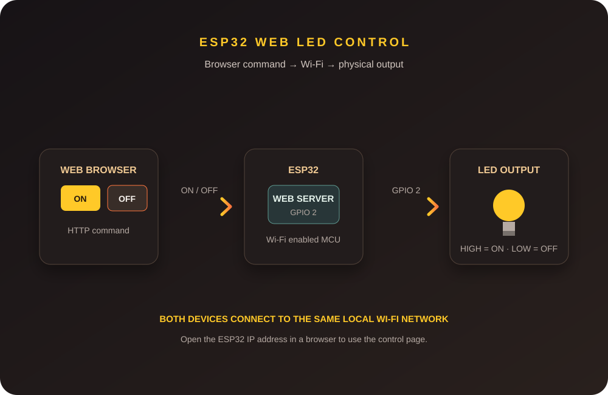

IoT Project · Task 1
ESP32 Web-Based LED Control
Built an ESP32 web server that connects to Wi-Fi and serves a simple browser control page. Pressing ON or OFF sends an HTTP request that switches the LED on GPIO 2.
Project demo and system image

The diagram shows the command path; play the supplied recording to see the project demonstration.
Overview
The ESP32 connects to the same local Wi-Fi network as the computer or phone. After it starts a web server, its IP address is entered in a browser to open the LED control page.
The ON and OFF buttons send HTTP requests to the ESP32. The controller reads each request and sets GPIO 2 HIGH or LOW to change the LED state.
Hardware and software
Hardware
- ESP32 development board
- Built-in LED or LED on GPIO 2
- USB cable for power and programming
- Wi-Fi network and a browser device
Software and protocols
- Arduino IDE and ESP32 board package
- C++ with the ESP32 Wi-Fi library
- HTML control interface
- HTTP requests over the local Wi-Fi network
An external LED can be connected between GPIO 2 and GND; use a series resistor to limit current. The built-in LED needs no external wiring.
How it works
- Power the ESP32 and connect it to Wi-Fi.
- Read the assigned IP address from the Serial Monitor.
- Open that address in a browser on the same network.
- Press LED ON or LED OFF; the browser sends the matching HTTP request.
- The ESP32 changes GPIO 2 and the LED state.
In the request handler, GET /LED=ON sets GPIO 2 HIGH and GET /LED=OFF sets it LOW.
Keep real Wi-Fi credentials out of public code and screenshots.
Result and learning
The project demonstrates remote LED control through an ESP32-hosted webpage. It connects embedded programming, Wi-Fi communication, HTTP requests, HTML, and GPIO output in one small IoT system.
This task provided hands-on practice setting up the ESP32 web server, finding its IP address, building browser controls, and troubleshooting Wi-Fi connectivity and request paths.
Complete project write-up
Expand to read all sections from the project notes
IoT Session — Task 1: ESP32 Web-Based LED Control
1. Overview
Objective
The objective of this task is to develop a simple IoT system using an ESP32 microcontroller that connects to Wi-Fi and allows an LED to be controlled through a web browser.
The system provides two buttons, ON and OFF, on a webpage. By pressing these buttons, the user can remotely control the LED connected to the ESP32.
Problem Being Addressed
Normally, an LED can be controlled using a physical switch or directly through an Arduino program. In this project, I wanted to control the LED wirelessly through a webpage without using a physical switch.
This demonstrates the basic concept of an IoT device communicating with a user through a network.
Project Summary
In this project, the ESP32 is connected to a Wi-Fi network and works as a small web server. After connecting, the ESP32 provides an IP address.
I enter this IP address into a web browser. The ESP32 then displays a webpage containing ON and OFF buttons.
When I press ON, the ESP32 receives the request and turns the LED ON. When I press OFF, the ESP32 turns the LED OFF.
Basic Operation
Web Browser
↓
Wi-Fi
↓
ESP32 Web Server
↓
GPIO 2
↓
LED2. Concepts
ESP32 Web Server
The ESP32 is a Wi-Fi-enabled microcontroller. In this project, I used the ESP32 as a web server.
The ESP32 performs two main tasks:
- Connects to the Wi-Fi network.
- Controls the LED according to commands received from the webpage.
Wi-Fi Communication
The ESP32 connects to my Wi-Fi network using its built-in Wi-Fi capability.
After successfully connecting, the ESP32 receives an IP address. I use this IP address in a browser to access the control webpage.
Both the ESP32 and the device accessing the webpage need to be connected to the same local network for this setup.
HTTP Request
When I press an ON or OFF button, the browser sends an HTTP request to the ESP32.
For my project:
/LED=ONturns the LED ON.
/LED=OFFturns the LED OFF.
The ESP32 reads the request and changes the GPIO 2 output accordingly.
HTML Interface
I used HTML to create the webpage.
The webpage contains two buttons:
[ LED ON ]
[ LED OFF ]These buttons send commands to the ESP32 web server.
3. System Design
System Architecture
The complete system consists of:
User
↓
Web Browser
↓
Wi-Fi Network
↓
ESP32 Web Server
↓
GPIO 2
↓
LEDData Flow
- I power the ESP32 using a USB cable.
- The ESP32 connects to Wi-Fi.
- The ESP32 receives an IP address.
- I enter the IP address in the browser.
- The ESP32 displays the LED control webpage.
- I press the LED ON button.
- The browser sends an HTTP request.
- The ESP32 receives and processes the request.
- GPIO 2 is set HIGH.
- The LED turns ON.
The same process happens for the OFF command, except GPIO 2 is set LOW.
Block Diagram
Laptop / Mobile Browser
↓
Wi-Fi Network
↓
ESP32 Web Server
↓
GPIO 2
↓
LED4. Hardware and Software
Hardware Components
| Component | Purpose |
|---|---|
| ESP32 Development Board | Main microcontroller and web server |
| Built-in LED / LED | Output controlled through webpage |
| USB Cable | Programming and powering the ESP32 |
| Wi-Fi Network / Hotspot | Wireless communication |
| Computer / Mobile | Accessing the control webpage |
For my setup, an external relay or AC bulb is not required because I am controlling the LED directly from the ESP32.
Software Used
| Software / Tool | Purpose |
|---|---|
| Arduino IDE | Writing and uploading the ESP32 program |
| ESP32 Board Package | Allows programming of the ESP32 |
| C/C++ | Programming the ESP32 |
| HTML | Creating the control webpage |
| Web Browser | Controlling the LED |
| Wi-Fi | Communication between ESP32 and browser |
5. Wiring / Setup
For my setup, I used the ESP32's GPIO 2 to control the LED.
Pin Connection
| ESP32 | Component | Function |
|---|---|---|
| GPIO 2 | LED | Digital output |
| GND | LED circuit | Ground |
If I use the built-in LED, no external LED wiring is required.
Circuit Operation
When GPIO 2 is set to:
HIGH → LED ON
LOW → LED OFFIf an external LED is used, a resistor should be connected in series with the LED to limit current and protect the LED and ESP32 GPIO.
6. Implementation
Program Logic
The program works in the following sequence:
- Define the Wi-Fi name and password.
- Set GPIO 2 as an output.
- Connect the ESP32 to Wi-Fi.
- Start the web server.
- Display the ESP32 IP address in Serial Monitor.
- Open the IP address in a browser.
- Display the ON and OFF buttons.
- Wait for a button command.
- Process the HTTP request.
- Change the LED state.
ESP32 Program
#include <WiFi.h>
const char* ssid = "YOUR_WIFI_NAME";
const char* password = "YOUR_WIFI_PASSWORD";
WiFiServer server(80);
const int ledPin = 2;
void setup() {
Serial.begin(115200);
pinMode(ledPin, OUTPUT);
// LED OFF initially
digitalWrite(ledPin, LOW);
// Connect to Wi-Fi
WiFi.begin(ssid, password);
Serial.print("Connecting to Wi-Fi");
while (WiFi.status() != WL_CONNECTED) {
delay(500);
Serial.print(".");
}
Serial.println();
Serial.println("Wi-Fi connected");
Serial.print("ESP32 IP Address: ");
Serial.println(WiFi.localIP());
// Start web server
server.begin();
}
void loop() {
WiFiClient client = server.available();
if (!client) {
return;
}
String request = client.readStringUntil('\r');
client.flush();
// LED ON
if (request.indexOf("GET /LED=ON") >= 0) {
digitalWrite(ledPin, HIGH);
}
// LED OFF
if (request.indexOf("GET /LED=OFF") >= 0) {
digitalWrite(ledPin, LOW);
}
// Send webpage
client.println("HTTP/1.1 200 OK");
client.println("Content-Type: text/html");
client.println("Connection: close");
client.println();
client.println("<!DOCTYPE html>");
client.println("<html>");
client.println("<head>");
client.println("<title>ESP32 LED Control</title>");
client.println("</head>");
client.println("<body>");
client.println("<h1>ESP32 LED Control</h1>");
client.println("<p>");
client.println("<a href=\"/LED=ON\">");
client.println("<button>LED ON</button>");
client.println("</a>");
client.println("</p>");
client.println("<p>");
client.println("<a href=\"/LED=OFF\">");
client.println("<button>LED OFF</button>");
client.println("</a>");
client.println("</p>");
client.println("</body>");
client.println("</html>");
delay(1);
client.stop();
}Code Explanation
Wi-Fi Library
#include <WiFi.h>This library provides Wi-Fi communication functions for the ESP32.
Wi-Fi Credentials
const char* ssid = "YOUR_WIFI_NAME";
const char* password = "YOUR_WIFI_PASSWORD";These values specify the Wi-Fi network to which the ESP32 connects.
LED Pin
const int ledPin = 2;GPIO 2 is configured as the digital output for the LED.
Web Server
WiFiServer server(80);The ESP32 creates a web server on port 80, which is the standard HTTP port.
LED ON
if (request.indexOf("GET /LED=ON") >= 0) {
digitalWrite(ledPin, HIGH);
}When the ESP32 receives the ON request, it sets the LED GPIO HIGH.
LED OFF
if (request.indexOf("GET /LED=OFF") >= 0) {
digitalWrite(ledPin, LOW);
}When the ESP32 receives the OFF request, it sets the LED GPIO LOW.
7. HTML Interface
The webpage created by my ESP32 contains two buttons:
ESP32 LED Control
[ LED ON ]
[ LED OFF ]When I press LED ON, the browser sends:
/LED=ONThe ESP32 receives this request and sets GPIO 2 to HIGH.
When I press LED OFF, the browser sends:
/LED=OFFThe ESP32 then sets GPIO 2 to LOW.
8. How the Webpage Communicates with ESP32
ON Command
User clicks LED ON
↓
Browser sends HTTP request
↓
GET /LED=ON
↓
ESP32 receives request
↓
GPIO 2 = HIGH
↓
LED turns ONOFF Command
User clicks LED OFF
↓
Browser sends HTTP request
↓
GET /LED=OFF
↓
ESP32 receives request
↓
GPIO 2 = LOW
↓
LED turns OFFThe ESP32 and the browser are connected through the same Wi-Fi network.
9. Evidence
Physical Setup
For my project, I can include:
- ESP32 development board
- USB connection
- ESP32 onboard LED
- Computer running Arduino IDE
Web Interface Screenshots
I can include screenshots showing:
- ESP32 IP address in Serial Monitor
- ESP32 LED Control webpage
- LED ON condition
- LED OFF condition
Demonstration Video
My demonstration video can show:
- Connecting the ESP32 to Wi-Fi.
- Opening the Serial Monitor.
- Getting the ESP32 IP address.
- Entering the IP address in the browser.
- Opening the LED control webpage.
- Clicking LED ON.
- Showing the LED turning ON.
- Clicking LED OFF.
- Showing the LED turning OFF.
10. Challenges and Fixes
Challenge 1 — ESP32 Could Not Connect to Wi-Fi
Problem: The ESP32 remained in the Wi-Fi connection process.
Solution: I checked the Wi-Fi name and password and made sure the ESP32 was within the Wi-Fi network range.
Challenge 2 — Webpage Could Not Be Opened
Problem: The webpage could not be accessed.
Solution: I checked the IP address displayed in the Serial Monitor and made sure my computer was connected to the same Wi-Fi network.
Challenge 3 — LED Did Not Respond
Problem: The LED did not change when the webpage button was pressed.
Solution: I checked the GPIO configuration and verified that the ON and OFF HTTP request paths were correctly programmed.
Challenge 4 — IP Address Changed
Problem: The ESP32 can receive a different IP address after reconnecting to Wi-Fi.
Solution: I checked the current IP address shown in the Serial Monitor before opening the webpage.
11. Reflection
This task helped me understand how an ESP32 can be used as a web server to control a physical output through Wi-Fi.
I learned how to connect the ESP32 to a Wi-Fi network, obtain its IP address, create a simple HTML webpage, and use HTTP requests to control an LED.
Through this project, I gained practical experience in:
- ESP32 programming
- Wi-Fi communication
- Web server creation
- HTTP requests
- HTML webpage development
- GPIO control
- Basic IoT system architecture
This project also gave me a foundation for developing more advanced IoT systems where devices can be controlled through web interfaces and cloud platforms.
Final Result
The completed project demonstrates web-based LED control using an ESP32.
The ESP32 connects to Wi-Fi, starts a web server, provides an HTML control webpage, receives ON/OFF commands from the browser, and controls the LED through GPIO 2.
Final System
Web Browser
↓
Wi-Fi
↓
ESP32 Web Server
↓
GPIO 2
↓
LEDProject link
Add a repository or source link here when available.
Add project URL in VS Code